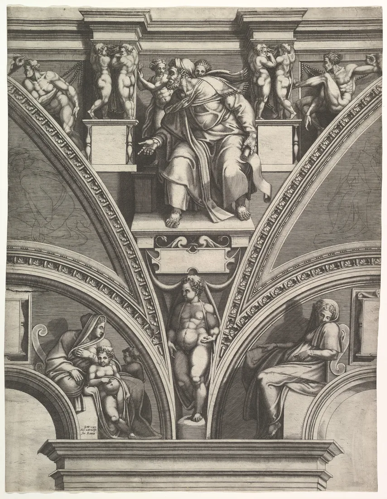
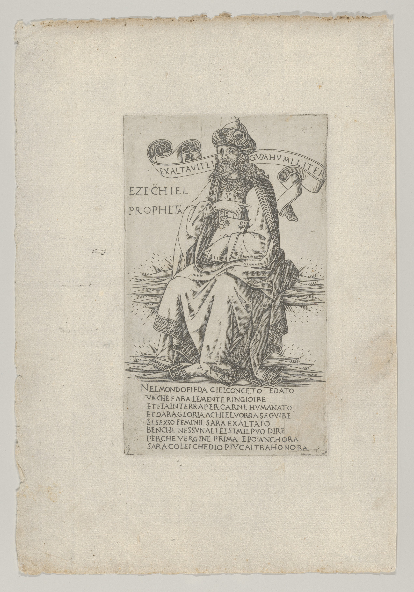
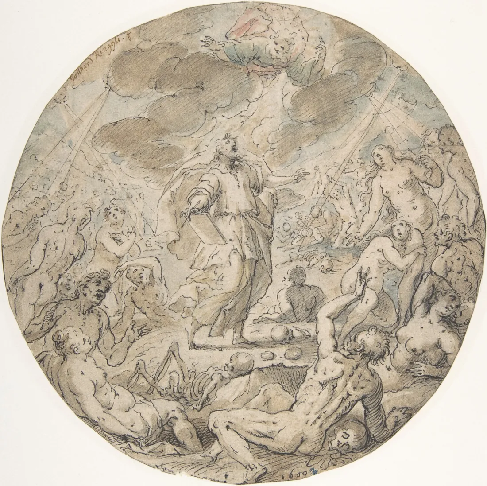
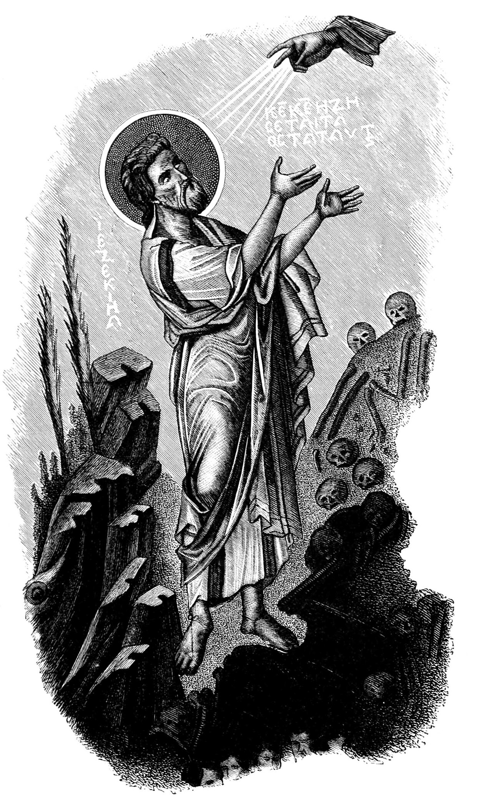
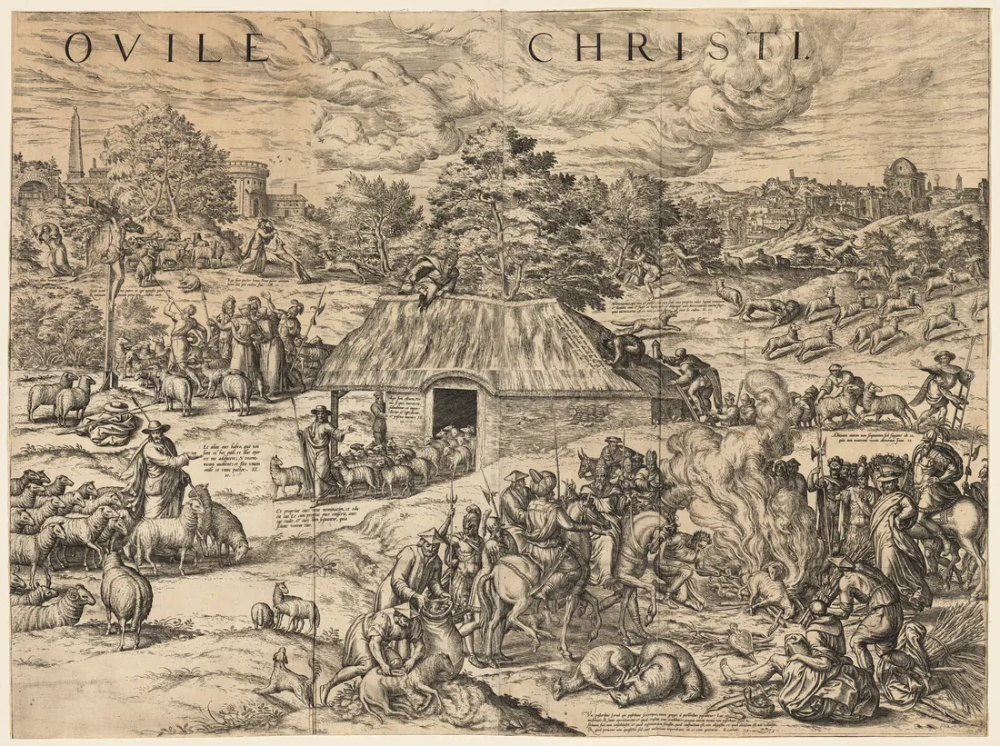
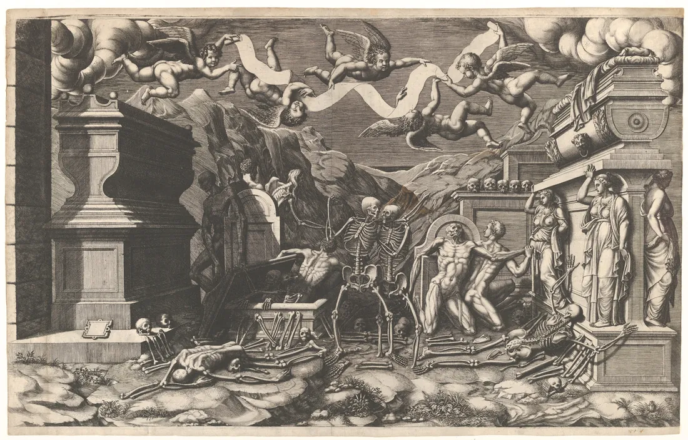
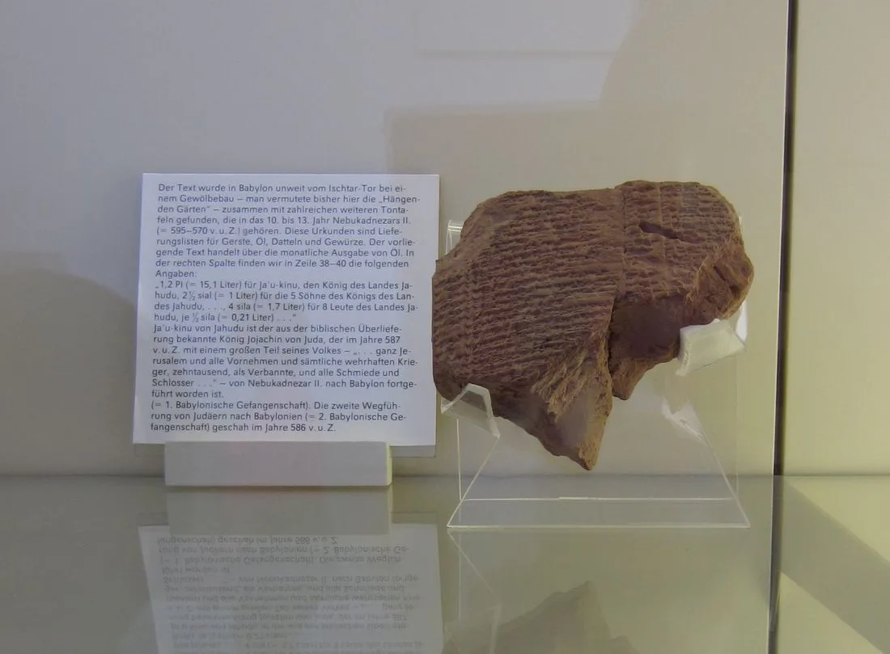
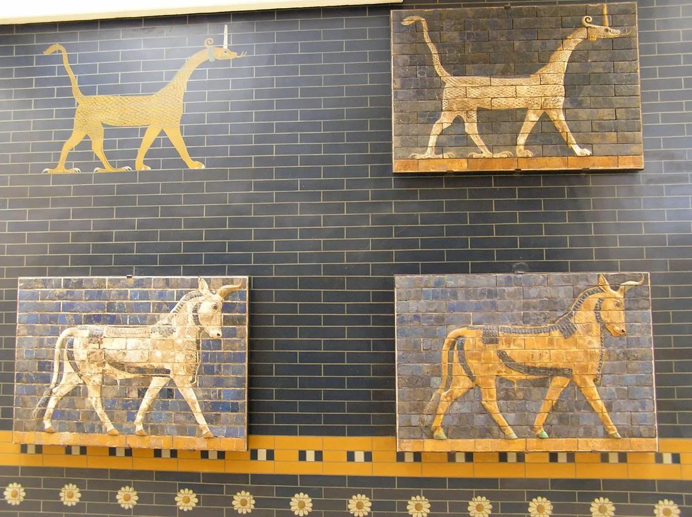
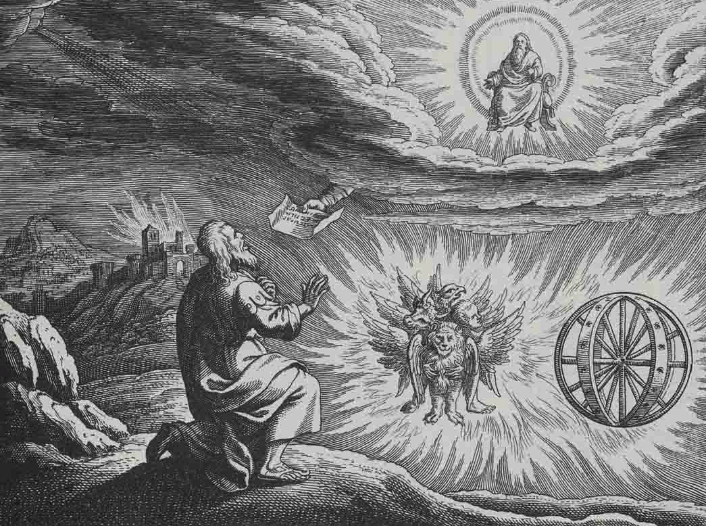

“Son of man”
about 93 times
God’s name for Ezekiel. In Hebrew, ben adam: “human one,” a mortal standing before overwhelming glory (2:1). Part IV follows how the title grows.
Israel, Covenant & Prophets · Grades 6–12 · 50–60 minutes (or two sessions with the full story)
יְחֶזְקֵאל Yeḥezqel · “God strengthens”
Can a scattered people find hope after losing their home?
Ezekiel is a priest and prophet among Judean exiles in Babylon. His visions confront wrongdoing and announce renewal beyond Jerusalem’s destruction: the glory of God leaves the temple, the city falls, and then dry bones stand up, a river flows out of a new sanctuary, and the last words of the book name the city “The LORD is there.”
Part I · Meet the prophet
Ezekiel was born into one of Jerusalem’s priestly families and raised to serve in the temple. Then, in 597 BC, Babylon marched him some 900 miles away with King Jehoiachin and Judah’s leading families. If the “thirtieth year” of Ezekiel 1:1 is his age, as many readers think, the year he should have begun serving at the altar (Numbers 4:3) is the year God met him instead beside a canal in Babylonia.


“Son of man”
about 93 times
God’s name for Ezekiel. In Hebrew, ben adam: “human one,” a mortal standing before overwhelming glory (2:1). Part IV follows how the title grows.
“Then they will know that I am the LORD”
more than 60 times
The goal of both judgment and rescue: that people recognise who God is (37:14).
“The glory of the LORD”
the plot of the book
It appears in exile (1), leaves the temple (10–11), and returns to a new one (43). Track it in Part III.
Ezekiel receives his opening vision beside the Chebar canal in Babylonia (1:1–3). His priestly background makes the temple and God’s presence central concerns. Before these events, Israel’s covenant calls for loyalty to God and care for neighbours. These books connect the failures of leaders and communities with judgment, grief, and the hope of restoration.
Today’s goals: tell the book’s story in three acts; explain one image using its passage; distinguish the text’s claim from a later interpretation; trace one Ezekiel promise forward through the Bible.
“Major” refers to the relative length of this group’s books, not a ranking of prophets’ importance. Christian Bibles commonly group Isaiah, Jeremiah, Lamentations, Ezekiel, and Daniel here. Jewish Bibles place Ezekiel among the Latter Prophets, after Jeremiah.
Part II · The story
Ezekiel is not a random collection of strange visions. It is a story with a turning point: a city falls in the middle of the book, and everything bends around that news. Read it the way the exiles lived it: first the warnings, then the silence, then the rebuilding.
Scenes retell the text in plain words. Quotation marks with “BSB” are the Berean Standard Bible; open any “Read here” to check the retelling against the passage.
Act I · Ezekiel 1–24 · 593–588 BC
God meets Ezekiel in exile, sends him to warn people who are sure Jerusalem is safe, and shows him why it is not.
Ezekiel 1593 BC · year 5 of exile
A storm rolls in from the north: fire flashing, and at its centre something gleaming like amber. Four living creatures, each with four faces (human, lion, ox, eagle), move straight ahead without turning. Beside them, wheels within wheels, their rims full of eyes. Above them a crystal expanse; above that a throne like sapphire, and on it a figure of fire wrapped in rainbow light. Ezekiel falls face down.
Look for: how carefully Ezekiel hedges: “the appearance of the likeness of the glory” (1:28). And where this happens: in Babylonia, far from the temple.
Ezekiel 2:1–3:15
“Son of man, stand up.” God sends Ezekiel to “a rebellious house,” whether they listen or not. A hand holds out a scroll written on front and back with “lamentation, mourning, and woe.” He is told to eat it, and it tastes as sweet as honey. He goes to the exiles at Tel-abib and sits where they sit, overwhelmed, for seven days (3:15).
Look for: why the message must go inside the messenger before he speaks it, and why bitter words could taste sweet.
Ezekiel 3:16–27
God makes Ezekiel a watchman. If he sees danger and stays silent, he shares the blame; if he warns and they ignore him, he has done his part. Then God binds his tongue: Ezekiel can speak only when God gives him words. The silence lasts until the city falls (24:27; 33:22).
Look for: the line between responsibility for warning and responsibility for choosing.
Ezekiel 4–5; 12
A silent prophet becomes street theatre. Ezekiel draws Jerusalem on a clay brick and lays siege to it with toy ramps. He lies on his side for months, eating rationed bread. He shaves his head and splits the hair into three piles: one burned, one cut with a sword, one thrown to the wind. Later he packs an exile’s bag and digs out through a wall at dusk while the neighbours watch.
Look for: what each action said to people who believed Jerusalem could never fall. All six sign-acts are in the library.
Ezekiel 8–11592 BC
The elders are sitting in Ezekiel’s house when a hand lifts him by the hair and carries him, in vision, to Jerusalem. Room after room, it gets worse: an idol at the gate, seventy elders burning incense to wall paintings in the dark, women weeping for the god Tammuz, twenty-five men with their backs to the temple bowing to the sun. Then the glory moves: to the threshold, to the east gate, and out over the mountain east of the city.
Look for: the one line of comfort in the middle of it: “for a little while I have been a sanctuary for them in the countries to which they have gone” (11:16, BSB).
Ezekiel 18
The exiles have a proverb: “The fathers have eaten sour grapes, and the children’s teeth are set on edge.” In other words: we are paying for our parents’ sins, so why try? God refuses the proverb. Each person answers for their own life, and anyone can turn. “For I take no pleasure in anyone’s death… So repent and live!” (18:32, BSB).
Look for: how the chapter turns despair into a door left open.
Ezekiel 24January 588 BC
God tells Ezekiel to write down the date: today Babylon has begun the siege of Jerusalem, 900 miles away. That same day Ezekiel learns his wife, “the desire of your eyes,” will die, and he is not to mourn in public. She dies that evening. When the people ask why, he tells them: the temple, the desire of your eyes, is about to be lost too.
Look for: the cost to the prophet himself. This is the hardest page in the book; read it gently.
Act II · Ezekiel 25–32 · while the city burns
Between the start of the siege and the news of the fall, the book turns to the nations. No empire is beyond accountability.
Ezekiel 25–28
While Jerusalem burns, the book turns outward. Ammon, Moab, Edom and Philistia gloated over Judah’s fall. Tyre, the rich island port, is pictured as a magnificent merchant ship loaded with the world’s goods, sinking in the heart of the seas (27). Its king boasts, “I am a god” (28:2), and is answered: “you are a man and not a god.”
Look for: pride as the common thread. In 28:11–19 the king of Tyre is lamented as one who was in Eden; some later Christian readers applied that lament to Satan’s fall. That reading goes beyond what the passage names.
Ezekiel 29–32571 BC (29:17)
Egypt, the power Judah kept hoping would rescue it, is pictured as a great monster lying in the Nile, saying “The Nile is mine; I made it myself” (29:3, BSB). It is a “staff of reed” that splinters when you lean on it (29:6–7), and a towering cedar cut down (31). Babylon, God’s instrument, is not exempt either.
Look for: what it means that God speaks to every empire, not just Israel. Note where these chapters sit: in the silence between the siege (24) and the news (33).
Act III · Ezekiel 33–48 · 585–573 BC
The worst has happened. Now the prophet who announced the end announces a beginning.
Ezekiel 33January 585 BC
A survivor stumbles in from Jerusalem with the news. The evening before, Ezekiel’s mouth was opened, and now he speaks freely. His watchman commission is renewed, with a plea: “Turn! Turn from your evil ways! Why should you die?” (33:11). The people flock to hear him, yet to them he is “like a singer of love songs with a beautiful voice… They hear your words but do not put them into practice” (33:32, BSB).
Look for: the turn of the whole book. Everything after this is rebuilding.
Ezekiel 34
Israel’s kings were shepherds who ate the sheep: they took the wool and the meat and left the weak, sick and lost to scatter. God fires them. “Behold, I Myself will search for My flock and seek them out” (34:11, BSB). He will seek the lost, bind up the broken, strengthen the weak, and set over them “one shepherd, My servant David” (34:23).
Look for: what makes leadership good or bad here. Hold this one: it runs straight into the Gospels (Part IV).
Ezekiel 36
Restoration will not happen because Israel deserves it but “for My holy name” (36:22, BSB). God will gather them, wash them with clean water, and perform surgery: “I will remove your heart of stone and give you a heart of flesh” (36:26, BSB), and put his own Spirit inside them so they can finally keep his ways.
Look for: the difference between a new rule and a new heart. Who does the changing in 36:24–28?
Ezekiel 37
A valley floor covered in bones, very dry. “Son of man, can these bones live?” Ezekiel prophesies; the bones rattle together, grow sinews, flesh, skin, but lie there breathless. He calls to the breath from the four winds, and they stand up, “a vast army” (37:10, BSB). Then two sticks, Judah and Joseph, become one in his hand: one people, one king, and “My dwelling place will be with them” (37:27).

Look for: the passage’s own explanation in 37:11: “these bones are the whole house of Israel.” Then investigate it in Part III.
Ezekiel 38–39
One last storm. A ruler called Gog gathers a vast coalition “from the far north” against a restored people living in unwalled villages. They do nothing to defend themselves; God alone turns the attack back. The chapters close not with the battle but with a promise: “I will no longer hide My face from them, for I will pour out My Spirit on the house of Israel” (39:29).
Look for: why the restored people are safe. Readers have long argued about who Gog is; treat it as apocalyptic imagery, not a newspaper code. Revelation borrows the names (Revelation 20:8).
Ezekiel 40–46573 BC · 14 years after the fall
In the twenty-fifth year of exile, Ezekiel is set on a very high mountain. A man who gleams like bronze, holding a measuring reed, walks him through a new temple: every gate, wall, chamber and altar measured, square, symmetrical and holy. Then Ezekiel is brought to the east gate and sees the glory coming back the way it left: “His voice was like the roar of many waters, and the earth shone with His glory” (43:2, BSB). The east gate is shut behind it for good (44:2).
Look for: the reversal of chapters 10–11: same gate, opposite direction.
Ezekiel 47
Water trickles out from under the temple threshold. The guide measures it: ankle-deep, then knee-deep, then waist-deep, then a river too deep to cross. It runs down into the Dead Sea and makes it fresh. Fishermen spread nets from En-gedi; trees on both banks bear fruit every month, “and their leaves for healing” (47:12, BSB).
Look for: how worship becomes life for the land. “Wherever the river flows, everything will flourish” (47:9).
Ezekiel 48
The land is shared out again among all twelve tribes, with a city in the middle whose twelve gates bear the tribes’ names. The book that began with the glory appearing in a foreign land ends with a name. Not the temple, not the king: the presence. “From that day on the name of the city will be: THE LORD IS THERE” (48:35, BSB).
Look for: how the last line answers the lesson’s big question.
Close the book and retell Ezekiel to a partner in six sentences: where it starts, what he warns, where the glory goes, what news arrives, what God promises, and the city’s last name.
Part III · Investigate
Six activities, in order. Each asks you to separate what the text shows, what it explains, and what later readers add.
Core lesson · 1 of 6
Ezekiel 37 shows scattered bones becoming a living people. Predict the identification the passage itself gives.
Choose a prediction, then compare it with the passage.

Core lesson · 2 of 6
Choose a section, read the linked passage in your Bible, and answer with a verse. Summaries are teaching paraphrases, not Scripture quotations.
Ezekiel’s symbolic actions and visions communicate theological claims. Do not read every image as a literal machine or a modern news code. Chapter 37 itself identifies the bones with the whole house of Israel. Christians also read resurrection themes here, but that connection should be distinguished from the explanation in 37:11–14.
Core lesson · 3 of 6
The exiles feared that losing the temple meant losing God. Step through four scenes and watch where God’s glory is, and where it is not.
Compare: What stays consistent across these scenes? What changes? How does the final vision answer the loss described earlier in the book?
Core lesson · 4 of 6 · Ezekiel 37:1–14
Read Ezekiel 37:1–14 (reading notes). Sort each claim: an observation describes the vision; the passage’s explanation identifies its meaning; a later interpretation connects it with another belief or text.
The Hebrew word ruach can mean breath, wind, or spirit. Compare 37:5, 9, and 14 in two translations. How does the movement from lifeless bodies to God’s spirit connect the image to renewal? Related meanings do not make every occurrence interchangeable; read each sentence in context.
Core lesson · 5 of 6
Core lesson · 6 of 6
Choose an image or action from this book. What does the passage show? What does it explain? What does your reading add? Include a verse reference and connect your explanation to the big question.
Extension: Compare the failed shepherds in 34:1–16 with the renewed heart in 36:24–28. What must change in both leadership and the people?
Notes save in this browser as you write.
Part IV · The bigger story
Ezekiel’s question is the Bible’s question: where is God when the house is gone? The answer he received, a presence that leaves and promises to come home, runs from the first pages of Genesis to the last pages of Revelation. For Christians, Ezekiel is one of the clearest windows onto what Jesus and the Spirit came to do.
God walks with people in the garden. When they are sent out east, cherubim guard the way back (Genesis 3).
The glory fills the tent in the wilderness (Exodus 40:34–35).
The glory fills Solomon’s temple so the priests cannot stand (1 Kings 8:10–11).
Riding on cherubim, the glory leaves eastward, like the exile from Eden (Ezekiel 10–11).
The glory returns from the east; the city is named “The LORD is there” (Ezekiel 43; 48:35).
“The Word became flesh and made His dwelling among us. We have seen His glory” (John 1:14). He calls his body the temple (John 2:19–21).
Wind and fire at Pentecost (Acts 2:1–4); “you yourselves are God’s temple” (1 Corinthians 3:16).
“The dwelling place of God is with man” and the city has no temple, for God and the Lamb are its temple (Revelation 21).
Read with both lenses. Jewish readers carry Ezekiel’s hope toward a restored people, temple and Torah. The New Testament writers read the same promises as reaching their goal in Jesus, the Spirit, and the new creation. See also The Tabernacle and The Temple & God’s Presence.
Each thread starts with what Ezekiel told the exiles, then follows where the Bible picks it up. The last line keeps the original meaning in view.
“I Myself will search for My flock”; one shepherd, “My servant David” (34:11–16, 23)
Ezekiel repeats it: “one shepherd for all of them” (37:24).
Jesus, son of David: “I am the good shepherd… one flock, one shepherd” (John 10:11–16); “the Son of Man came to seek and to save the lost” (Luke 19:10, compare Ezekiel 34:16).
Hold the lens: for the exiles this was God firing corrupt kings and promising a faithful one from David’s line.
clean water, a heart of flesh, “I will put My Spirit within you” (36:25–27)
Jeremiah, the same decade: a new covenant written on the heart (Jeremiah 31:31–34).
Jesus to Nicodemus: “born of water and the Spirit… You are Israel’s teacher, and you do not understand these things?” (John 3:5–10); the Spirit poured out (Acts 2); letters written “on tablets of human hearts” (2 Corinthians 3:3).
Hold the lens: Ezekiel promises a renewed people who keep God’s ways; Christians see that promise opened in the gift of the Spirit.
breath from the four winds; “I will put My Spirit in you and you will live” (37:9–14)
Daniel looks ahead to those who sleep in the dust awaking (Daniel 12:2).
The risen Jesus “breathed on them and said, ‘Receive the Holy Spirit’” (John 20:22); the Spirit who raised Jesus “will also give life to your mortal bodies” (Romans 8:11).
Hold the lens: 37:11 explains the bones as the nation’s lost hope. Resurrection is a later reading, held by Christians and by many Jewish teachers; the Talmud records rabbis debating whether these dead literally rose (Sanhedrin 92b).
“My dwelling place will be with them; I will be their God, and they will be My people” (37:27)
The covenant formula goes back to the wilderness (Leviticus 26:11–12).
Paul quotes it of the church: “We are the temple of the living God” (2 Corinthians 6:16); the last vision: “The dwelling place of God is with man” (Revelation 21:3).
Hold the lens: Ezekiel’s answer to “has God left us?” becomes the Bible’s final word.
water from the sanctuary, fruit every month, leaves for healing (47:1–12)
Eden had a river that watered the garden (Genesis 2:10); Zechariah sees living waters flowing from Jerusalem (Zechariah 14:8).
Jesus at the feast: “Streams of living water will flow from within him”; John adds that he meant the Spirit (John 7:37–39); the river and tree “for the healing of the nations” (Revelation 22:1–2).
Hold the lens: Revelation’s last chapter is built from Ezekiel’s last vision, almost image for image.
four living creatures, eyes, crystal expanse, sapphire throne, rainbow (1:4–28)
Isaiah’s throne vision, with seraphim crying “Holy, holy, holy” (Isaiah 6:1–4).
John sees a throne with a rainbow, a sea of glass like crystal, and four living creatures like a lion, an ox, a man and an eagle, full of eyes (Revelation 4:2–8).
Hold the lens: from about AD 400, church tradition (most influentially Jerome) gave the four faces to the four Gospels: Matthew the human, Mark the lion, Luke the ox, John the eagle. That symbol set is tradition, not the text.
God’s name for the prophet: a mortal before the glory (2:1)
Daniel sees “one like a son of man” coming with the clouds and given everlasting dominion (Daniel 7:13–14).
Jesus’s favourite name for himself (Mark 2:10; Mark 14:62), which draws mainly on Daniel 7 while also carrying the human weakness of Ezekiel’s usage.
Hold the lens: in Ezekiel the phrase means “human one,” not a heavenly title. Keep the two uses distinct.
eating a scroll, measuring the temple, Gog and Magog, a city with twelve tribal gates (3:3; 40; 38–39; 48:31–34)
Revelation borrows more scenes from Ezekiel, often in the same order, than from almost any other book.
John eats a scroll sweet then bitter (Revelation 10:9–10), measures the temple (Revelation 11:1), names Gog and Magog (Revelation 20:8), and sees a city with twelve gates named for the tribes (Revelation 21:10–16) and no temple, “because the Lord God Almighty and the Lamb are its temple” (21:22).
Hold the lens: Ezekiel ends with a temple at the centre; Revelation ends with God himself where the temple was.


Ezekiel 37 is read on the Sabbath during Passover, the festival of freedom. The chariot vision of chapter 1 is read on Shavuot. The Mishnah allowed the merkavah (chariot) to be taught only to a wise student one at a time (Ḥagigah 2:1), and the Talmud remembers Hananiah ben Hezekiah burning 300 jars of lamp oil working late to show that Ezekiel agrees with the Torah (Shabbat 13b).
Ezekiel 36:16–28 is one of the readings at the Easter Vigil, and 37:1–14 at the Vigil of Pentecost: a new heart and the breath of life read on the nights the church celebrates resurrection and the Spirit. The lion, ox, human and eagle still mark Gospel books, pulpits and cathedral doors.
The African American spirituals “Ezekiel Saw the Wheel” and “Dry Bones” sang Ezekiel’s visions as hope of freedom and new life. Around AD 244 the synagogue at Dura-Europos in Syria painted Ezekiel 37 across its wall, one of the oldest surviving paintings of a biblical story.
יְהוָה שָׁמָּה
“The LORD is there.”
Ezekiel 48:35 (BSB), the last words of the book
Reference library
Use these sources to revisit the setting, visual culture, and key passages.
Ezekiel’s book is dated like a diary, counting years from Jehoiachin’s exile. Read the dates first, then ask what each one asked of the people who lived through it.
Switch between List and Track, drag the track, or use the arrow keys to step through events.
Babylon deports King Jehoiachin and thousands of Judeans. Ezekiel, a priest, is among them.
Beside the Chebar canal he sees God’s glory far from Jerusalem and is sent to a rebellious people (Ezekiel 1–3).
In his house, Ezekiel is carried in vision to Jerusalem and shown what is happening in the temple (Ezekiel 8–11). The glory departs.
On the very day, Ezekiel is told that the siege has started (Ezekiel 24:1–2), though he is hundreds of miles away.
Babylon destroys the city and the temple. Ezekiel’s message turns from warning toward comfort.
A survivor arrives with the report (Ezekiel 33:21). Ezekiel speaks again about shepherds, a new heart, and dry bones.
In the twenty-fifth year of exile, Ezekiel is shown a restored dwelling and the glory’s return (Ezekiel 40–48).
A word about Egypt and Nebuchadnezzar (Ezekiel 29:17) is the latest date in the book.
Follow the presence: glory appears in exile (1) → departs the temple (10–11) → returns in the restoration vision (43). Ask how this movement answers the fear that everything has been lost.
Primary Archaeological Evidence
Ezekiel’s ministry takes place entirely in Babylonia among Judean deportees settled near Nippur along the Chebar canal (Ezekiel 1:1–3). Discoveries from the ruins of Babylon provide direct administrative and visual records of the royal deportation and imperial culture.


Visual reading guide · Ezekiel 1
Read Ezekiel 1 from the creatures and wheels upward to the expanse and throne. Ezekiel repeatedly uses comparison language. Study Merian’s engraving alongside the passage: how does the artist translate that language into a scene?

Look closely: What does the vision’s movement suggest about God’s presence beyond Jerusalem? Which features signal majesty or holiness? Support each answer with a verse.
Read the text
These are the passages this lesson keeps returning to, in the order they appear in the book. Open one, read it slowly, then use it as your evidence. Each passage also opens in the full Bible reader, where you can keep reading around it.
(applies to every passage on this page)
Teaching by doing
Ezekiel often acts out his message before speaking it. Open each action, predict what it communicated, then read the passage to check.
The message: Jerusalem will be besieged. The exiles who trusted the city to stand are shown, in miniature, that it will not.
The message: He is told to symbolically carry the weight of the people’s wrongdoing, so the long cost of it becomes visible.
The message: The three portions picture what will become of the people of Jerusalem: fire, sword, and scattering. A few strands are kept safe, hinting that a remnant survives.
The message: Those still in Jerusalem expect safety. The sign tells them they too will go into exile.
The message: His silent grief shows how the people will feel when the temple, “the delight of your eyes,” is lost: too stunned for the usual rituals.
The message: The text itself explains it: the divided kingdoms, Judah and Joseph, will be one people again under one shepherd.
Notice: Only one of these ends with the text interpreting the sign for us (37:19–22). For the others, what clues in the surrounding verses tell you the meaning?
USCCB: Ezekiel introduction and reading notes · Kingdoms, Prophets & Exile · The Tabernacle · The Temple & God’s Presence · Revelation
One session (50–60 minutes): 5 minutes: Meet Ezekiel and the three-act map. 10 minutes: read Act I’s first scene and Act III aloud (the turn at chapter 33 is the hinge). 10 minutes: predict and read Ezekiel 37. 10 minutes: follow the presence scenes together. 5 minutes: sort the claims. 5 minutes: check. 10 minutes: write an explanation with a verse reference.
Two sessions: Day 1 is Parts I–II: tell the whole story, with pairs taking one scene each and retelling it to the class, then the “Tell it back” check. Day 2 is Parts III–IV: the six activities, then each pair traces one thread from Part IV and reports what Ezekiel meant for the exiles and how the New Testament picks it up.
For younger readers, use Acts I and III and explain one image orally. For extension, compare two translations and distinguish textual observations from interpretive claims. Ezekiel 16 and 23 use frank adult imagery and are not assigned here. Ezekiel 24 involves a death in the prophet’s family; let students discuss textual grief without requiring personal disclosures.
_figure05.jpg){kind=link}